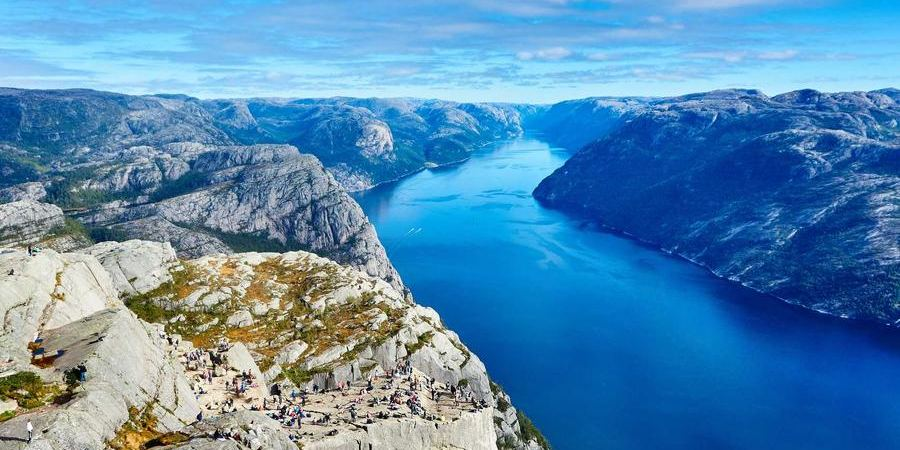

The coastal road closes for weather more often than anyone admits, so the drive took two days instead of one. These are the frames from the detour.

Field Notes is a running journal of places that took longer to reach than expected. Everything here is shot on a 35mm body I have dropped twice and a phone I keep losing.